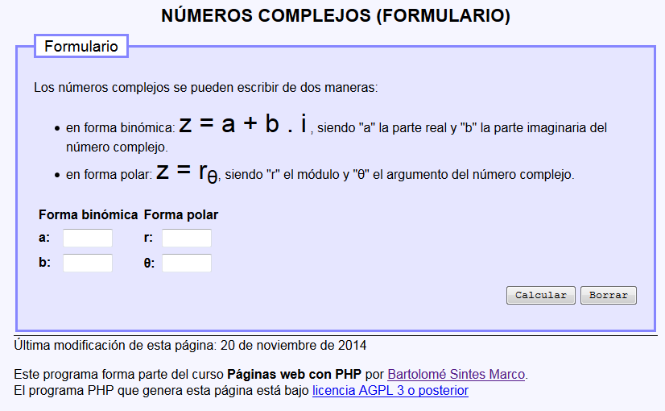
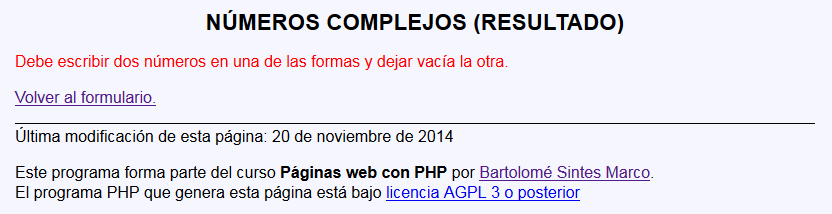
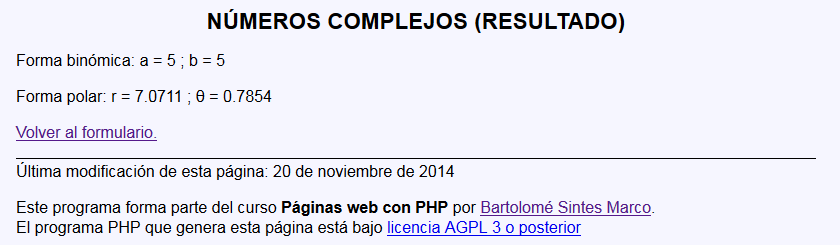

Exámenes - Números complejos
En este ejercicio se debe crear un programa que calcule la forma polar de un número complejo a partir de la forma binómica y viceversa.
Números complejos - Comentarios
- El programa tendrá dos páginas:
- La primera página pide los valores a convertir: la forma binómica (parte real y parte imaginaria) o la forma polar (módulo y argumento):

- La segunda página comprueba primero los valores recibidos. Si no se han escrito únicamente dos valores, se muestra un mensaje de error:

- En el caso de que los valores sean correctos, la segunda página calcula y muestra los valores de las dos formas:

- Fórmulas a utilizar:
- El cero no tiene forma polar
- si a = 0, θ = M_PI / 2;
- Forma polar: r = √(a * a + b * b) ; t = atan(b / a)
- Forma binómica: a = r * cos(θ) ; b = r * sin(θ)
Números complejos - Ejemplo de código HTML
<h1>Números complejos (Resultado)</h1>
<p>Forma binómica: a = 5 ; b = 5</p>
<p>Forma polar: r = 7.0711 ; θ = 0.7854</p>
Números complejos - Ejemplo de programa
Nota: El día del examen los alumnos no tienen acceso a este ejemplo, solamente tienen acceso a las capturas del apartado anterior.
Un ejemplo de programa puede probarse en la ventana siguiente:
Enlace a examen Números complejos